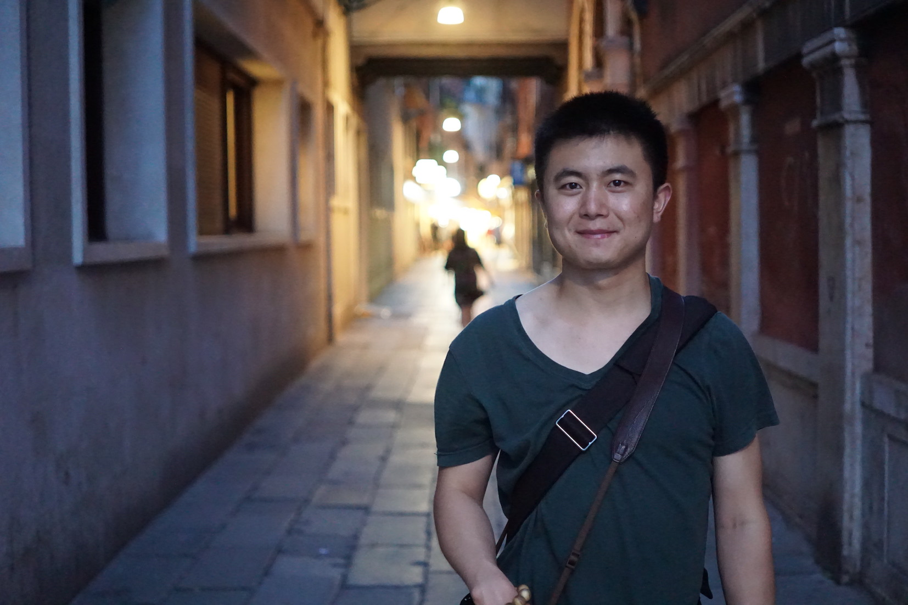

Gao, Fengnan
†
Assistant Professor (since September 2016), jointly appointed by
School of Data Science
of
Fudan University
Shanghai Center for Mathematical Sciences
Before Shanghai, I was a PhD student of Aad van der Vaart in Leiden University.

Photo Courtesy: Taken in Venice, Italy by
Chao Gao
in June, 2016
Contact
N202
Zibin Building
School of Data Science
Handan Road 220
Yangpu District, 200433
Shanghai, China
A@B A=fngao B=fudan.edu.cn
α@β α=gao.fengnan β=gmail.com
+86-(0)21-65648710
Teaching
2018/19 Fall Semester,
Statistics: Principle, Methods and R (I)
2017/18 Fall Semester, Statistics: Principle, Methods and R (I)
2017/18 Fall Semester, Statistical Learning
2016/17 Spring Semester, Statistics: Principle, Methods and R (II)
Research Interests
Nonparametric Bayesian Statistics
(High Dimensional) Statistical Inference in Networks
Probablistic Methods in Networks
Modeling and Analysis of Social Networks
Grants
2018 - 2020, PI of
Optimal Statistical Inference in Preferential Attachment Network Models
,
Young Scientist Award
, Granted by
National Natural Science Foundation of China
2017 - 2021, Co-PI of
Optimal Statistical Inferences of Non-IID Data
, As part of
Statistical Foundation and Analytical Methods of Big Data
,
National Key Project
, Granted by
National Natural Science Foundation of China
Papers
Consistent Estimation in General Sublinear Preferential Attachment Trees
Electronic Journal of Statistics
On the Asymptotic Normality of Estimating the Affine Preferential Attachment Network Models with Random Initial Degrees
Stochastic Processes and their Applications
Posterior contraction rates for deconvolution of Dirichlet-Lapalace mixtures
Electronic Journal of Statistics
Talks
The Isaac Newton Institute for Mathematical Sciences,
December 2016 in Cambridge, the UK
World Congress in Probability and Statistics
,
July 2016 in Toronto, Canada
Shanghai Center for Mathematical Sciences,
May 2016 in Shanghai, China
European Meeting of Statisticians,
July 2015 in Amsterdam, The Netherlands
10th Conference on Bayesian Nonparametrics,
June 2015 in Raleigh, NC, The USA
The Bayes Club,
June 2014 in Amsterdam, The Netherlands
A more complete list (including upcoming talks) can be found
here
.
Theses
Bayes and Networks
Leiden University
, Doctoral Thesis
Modeling and Inference of the Internet Movie Database
Eindhoven University of Technology
, Master's Thesis
Short CV
Assistant Professor, Fudan University and Shanghai Center for Mathematical Sciences, since Sep. 2016
PhD student of
Aad van der Vaart
, Leiden University, Sep. 2012 - Aug. 2016
M. Sc. Eindhoven University of Technology, Sep. 2010 - Sep. 2011
M. Sc. Kaiserslautern University of Technology, Aug. 2009 - Aug. 2010
B. Sc. Nanjing University, Sep. 2005 - Jun. 2009
You can find a more detailed CV
here
.
Hobbies
Travelling
Photography
Race cycling
Typography
Photos
You can find more photos
here
.
†
This
is a
Chinese name
.
Gao
is the family name and
Feng
-
nan
is the given name.
September 2016
{kind=link}